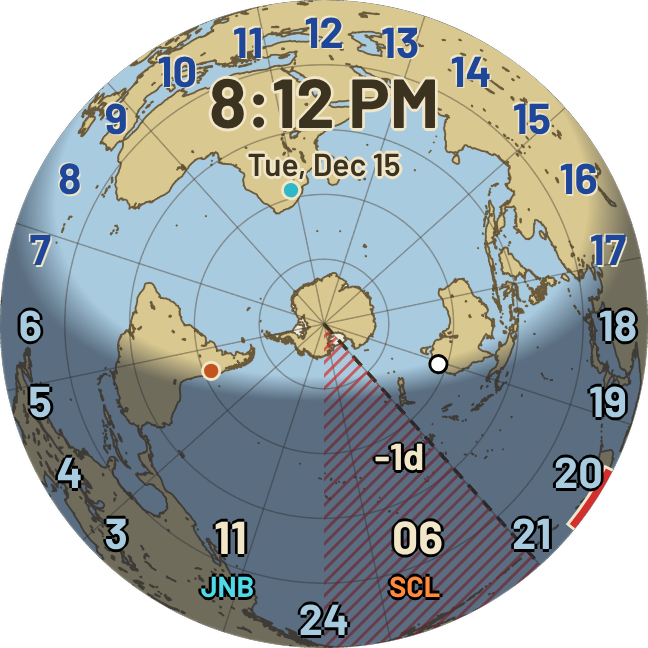
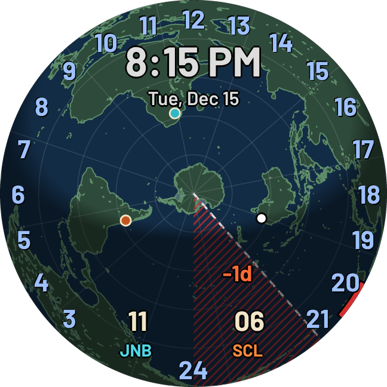

Vintage atlas · Dark
EarthTurn, turned over · For the southern half of the world
The EarthTurn watch face, seen from above the South Pole. Antarctica sits in the middle, with South America, Africa and Australia laid out around it. Seen from the south the earth turns clockwise, so the map turns clockwise once a day under a fixed ring of 24 hours with the sun at the top, and every place's hour is the numeral it points at. Night, day and the twilight between them are drawn where they really are. Your time sits large under the 12; two places you care about sit at the bottom.
In the works · for Wear OS 6 or later, like EarthTurn
The South Pole is the middle of the face, and Antarctica is drawn with its ice shelves, so it has the shape you know. The southern continents spread round it at their true distances from the pole; the north stretches out toward the rim, as the south does on EarthTurn.
From below, the earth spins the other way. The map turns clockwise and the 24 hours run round the ring in the same direction as an ordinary clock. Find a place on the map, look outward to the ring: the numeral it points at is the hour there.
The dark part of the map is where it is night right now, with a real twilight band at the edge. The shading follows the seasons, so Antarctica is lit all day through the southern summer and dark through the winter.
The dashed line is the International Date Line. Whichever part of the world is on a different date from yours is hatched with fine red slashes and marked +1d, or -1d once your own midnight has passed.
The face in the picture above is a Tuesday evening in Sydney in December, with Johannesburg and Santiago chosen as the two zones. Here is what each part is telling you.
Top
Your time and date
8:12 PM, Tue, Dec 15, written large under the 12 and outlined so it reads over the map. The short red bar on the rim, just past the 20, is your own hour on the ring.
The map
Who is awake
Africa in full daylight at the top, Sydney's white dot on the edge of the evening on the right, Santiago's orange dot on the left still waiting for dawn. In the middle, Antarctica is lit all the way round: in December the sun does not set there.
Bottom
Two places, as hours
11 over JNB in cyan: eleven in the morning in Johannesburg. 06 over SCL in orange: six in the morning in Santiago, the same Tuesday. Each code takes its dot's colour, so you can tell at a glance which dot on the map is which. A +1d or -1d appears beside the hour when a place is on another date, and +30m after the name for a half-hour zone such as India.
Lower right
The date line
The dashed line running from the pole to the lower right is the International Date Line. Everything from it clockwise round to the 24 at the bottom is hatched with red slashes and marked -1d: the part of the world still on Monday, Hawaii and Tahiti among it.
The same map, night shapes and maths as the watch, drawn in your browser at the time it is right now, with Johannesburg and Santiago as the two zones and Sydney as home. Spin the day, or press Play a day, to watch the world turn; move the seasonal sun, or press Play a year, to watch Antarctica go from midnight sun to polar night.
A demonstration, not the product. On the wrist the face draws itself, with your own choice of zones.
The dark side is not a fixed half-circle. It follows the sun's position through the year, so the shape of night changes with the seasons, not just where it sits. The soft edge is real twilight, from sunset to the end of nautical twilight. From the south, the seasons run the other way round from EarthTurn.
December
A small cap, pulled from the pole
Everything south of the Antarctic Circle stays lit all day, and the night edge bulges toward the equator. Long summer evenings in Melbourne, Cape Town and Buenos Aires.
March · September
Straight through the pole
At the equinoxes the line runs nearly through the centre and every place gets about twelve hours of dark.
June
A large cap over the pole
Antarctica is dark all day, and the southern winter nights are long.
Under the hood: EarthTurn's own 24 night shapes, taken in reverse order. The night over the South Pole in June is the night over the North Pole in December, so the same shapes serve both faces, with the same accuracy: the night edge within two or three degrees of the truth. How accurate the shading is.
The same five settings as EarthTurn. Hold the face, tap Customize, swipe through them. How the editor works.
Vintage atlas, or Dark: the same map in green on a deep blue sea, as in the second picture at the top.
Off or any of 69 time zones, written at the bottom as its hour over its name and marked on the map with a cyan dot.
A second place beside the first, marked with an orange dot. Turn it off and Zone 1 takes the centre of the bottom.
Puts your own white dot on the map, at the city of the zone you pick. It changes nothing else.
Red slashes and a +1d or -1d label, the slashes alone, or just the dashed line.
The rim of this map is latitude 60° north. Places beyond about 55° north, such as Moscow, Anchorage and Nuuk, have their dots set just inside the rim on their own longitude, so the hour they point at is still right.
Until it is on Google Play, EarthTurn shows the same turning world from the north.